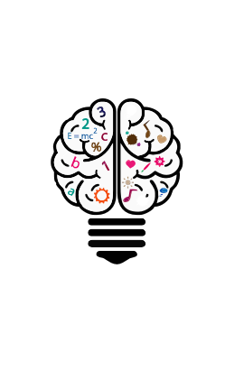

勇于拼搏微笑生活
求职岗位---php开发工程师
姓名:黎怀坤
性别:男
电话:13213930868
专业：软件技术
邮箱:lhk163email@163.com
毕业院校:河南职业技术学院
html5-and-css3--->60%
php-and-mysql--->50%
JavaScript--and--jQuery--->70%
thinkPHP--and--bootstrap--->50%
json--and--Ajax--->60%
Apache--and--Linux--->50%
大一学年独立完成简易商城系统前后端界面数据库交互
大一学年完成个人博客系统包括统计用户访问
大二学年完成JavaScript各种案例的运用
大二学年完成自然之友公益项目包括衣物回收,支教,垃圾分类,环保等方面与后台数据的交互

良好自学习惯
对代码方面
有较大的兴趣
上传
GitHub习惯
代码注释
自己会想办
法解决遇到
的问题
非本科出身
对代码原理方面
没有很深理解
但会努力学习
弥补不足